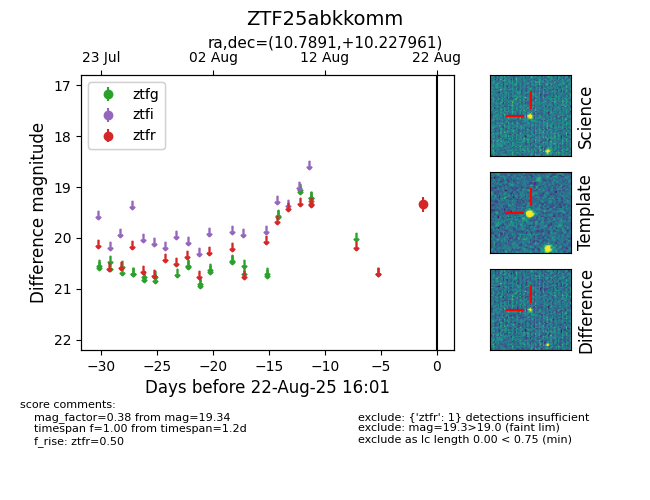

Target ZTF25abkkomm at 2025-08-22 16:01, see:
FINK: fink-portal.org/ZTF25abkkomm
Lasair: lasair-ztf.lsst.ac.uk/objects/ZTF25abkkomm
ALeRCE: alerce.online/object/ZTF25abkkomm
alt names
ZTF25abkkomm (ztf,alerce)
coordinates:
equatorial (ra, dec) = (10.7891,+10.22796)
galactic (l, b) = (119.5769,-52.58983)
photometry
last ztfr=19.34
1 ztfr detections
